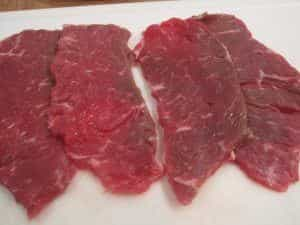

Quintus can be found at qcurtius.com. He is the author of the books On Duties, Thirty Seven, Sallust: The Conspiracy Of Catiline And The War Of Jugurtha, and other books. His work has been reviewed at Taki's Magazine. He can be followed on Twitter


I was watching a documentary on Netflix the other day about how our species (homo sapiens) spread out over the globe. One point made by the narrators was that the human brain was able to grow larger by the availability of high-energy (i.e., high-calorie) foods. Meat, fats, and bone marrow was an essential part of man’s intellectual development. I believe it still is. If you want your body and mind to be operating at peak performance, I believe you should be consuming meat at least occasionally.
One of the most efficient and inexpensive ways of consuming meat is by preparing your own dried meat (jerky). You may be surprised at how easy this is to do. Once made, jerky can be used for almost any occasion: taken to the field for hikes or hunts, for cooking at home, for taking to work in lunches, or for general snacking. You do not need to buy expensive cuts of meat, and you do not have to spend a large amount of time in preparation. And you will save yourself a large amount of money.
To convince yourself of this, go into any food store and see how expensive commercially-prepared jerky is. Even worse, these commercial preparations are often packed with nitrates and nitrites that both ruin the flavor of the meat and can impair the health.
The first step is to go to the supermarket and get your meat. Some writers say you should use sirloin or flank steak, but I am firmly against this idea. You simply don’t need this quality of cut. The whole idea here is to get ahead of the game: to take the cheaper cuts and then to turn them into something edible and useful. Any decent meat will do. I suggest you try top round or eye round or London broil. It doesn’t matter if these cuts are not known for their texture or quality. Jerky is heavily seasoned anyway; the idea here is to get meat for meat’s sake. Aim for long, thin strips of meat.

Wild game here also works wonderfully. If you are a hunter or know someone who hunts, try to get your hands on some wild meat if you can. Eating the freshest, most gamey meats available has a testosterone-elevating appeal that is impossible for words to describe. It is something that rings deep chords in our primal psyches. How much meat to you need? That depends, of course. For most purposes, a few pounds per batch will do well enough. You can always make more later.
Cut the meat against the grain into long strips. I think the ideal thickness is the same as what you would use when preparing stir-fried meat strips. Try to remove as much fat as possible from the meat. It should be against the grain so that when chewed, the eater does not have to contend with long, tough meat fibers in the mouth. Slicing can be done more easily when the meat is semi-frozen. Once this is done, put all the strips of sliced meat into a large bowl.
The next step is to marinate the meat. This is going to be one of the most important steps, so put some thought into this. My favorite marinade consists of a blend of the following ingredients: teriyaki or soy sauce, Worcestershire sauce, powdered onion, liquid smoke, and red pepper flake. Some people like to add more spices but this is all going to come down to personal preference. Some people like to use cloves, chili powder, cumin, nutmeg, oregano, or any number of other spices. With salty marinades like soy sauce or teriyaki sauce, it’s best not to let the marinade process go more than 6 hours or so. Any longer than this can make the meat too salty.
Remove the meat strips and gently pat dry with paper towels. You will be salivating at this point, but control your urges. There are some people who advocate that you should dry the meat using commercially-available dehydrators or even ovens. I am not a fan of this method, and I’ll tell you why. Ovens or dehydrators usually end up cooking the meat, rather than dehydrating it. It just not the way jerky should be made.
When American Indians made pemmican or South Africans make traditional biltong, they would let the meat air dry, often for days. One biltong recipe I read called for drying the meat in the open air for at least three days. While this may not be easy for most people living in the city, the idea is a sound one: the drying should be done free of artificial heat sources.
In the modern era, it is not practical for most people to hang meat out to dry for days. But there is a better way, and it is something I learned from watching one of those cooking shows many years ago: a large fan. All you need to do is lay your marinated meat strips on a few cooling racks (used for cooling cookies or other baked goods). Then place them in a place them near a fan in some part of the house, so that air is blowing over the meat continuously. You will be surprised at just how fast the meat dries up. Make sure you keep any household pets away from the meat.
After a few hours of continuous air blowing, the meat should be ready. You can store it in zip-top plastic bags, plastic containers, or even paper bags. The key thing is to give the meat room to move around and to “breathe” so that it does not attract moisture. The meat can then be use for nearly anything:
You get the idea. Cheers.